Artifacts and mockups
Review page: every piece in light and dark, as an image, so what you see is what a deck or page gets. Generated by scripts/cut-artifacts.mjs and scripts/cut-mockups.mjs.
Mockups
The hardware is staged and exempt from the flat rule. The screens are not. Both files are baked: fonts embedded, colours resolved.
Artifacts
Stamp
New. An inked impression at the slash angle; displacement-roughened, one flat ink.
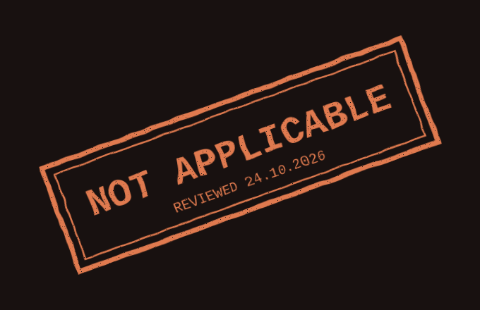
Tracked changes
New. Old wording struck, new wording inserted in the accent, change bar in the margin.
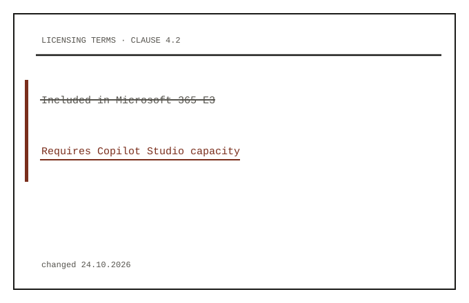
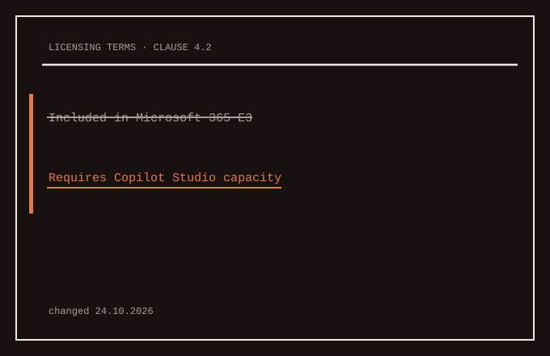
Terminal
New. A PAC CLI style table on the plate; the one null cell carries the accent.
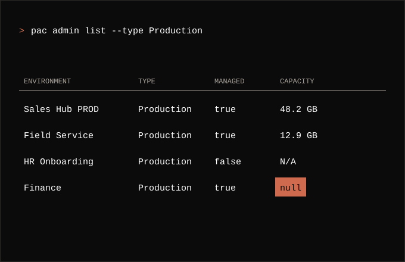
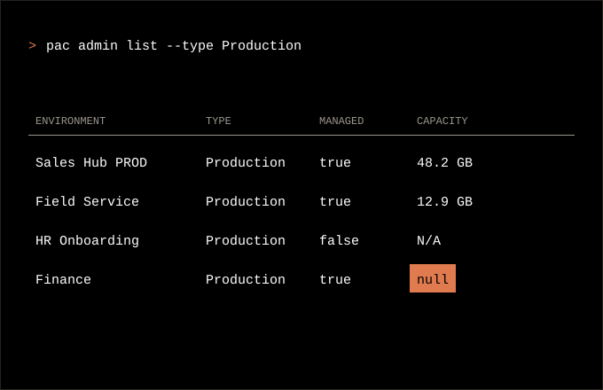
Receipt
Existing.
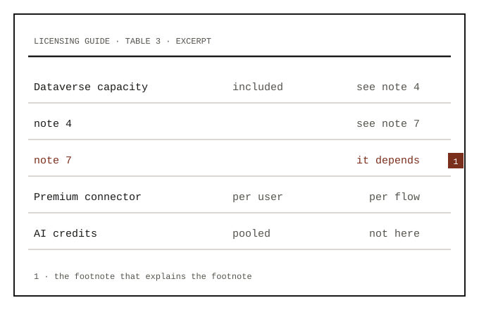
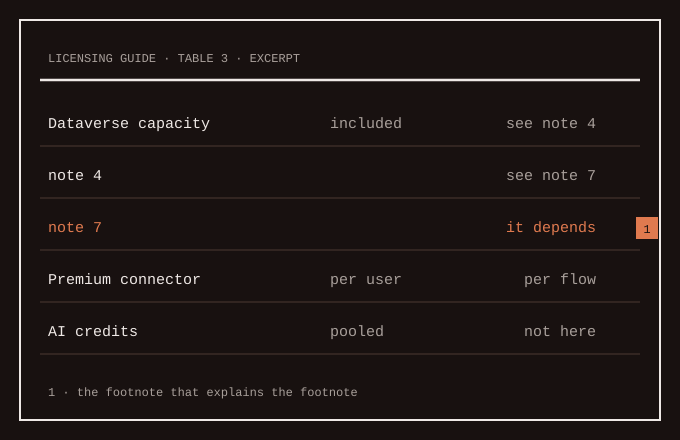
Coverage
Existing.
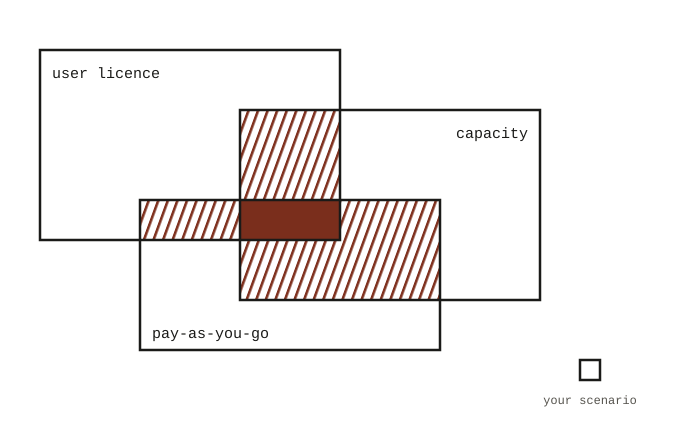
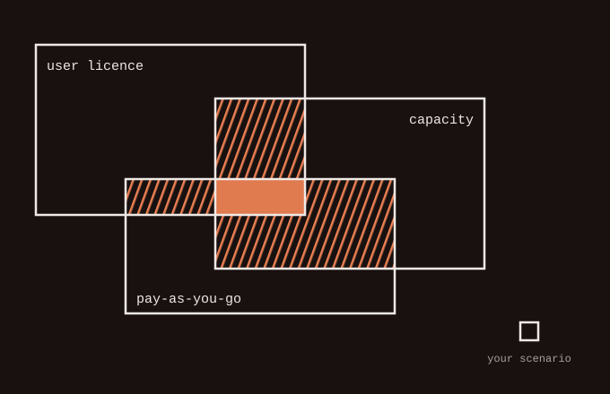
Checkbox
Existing.
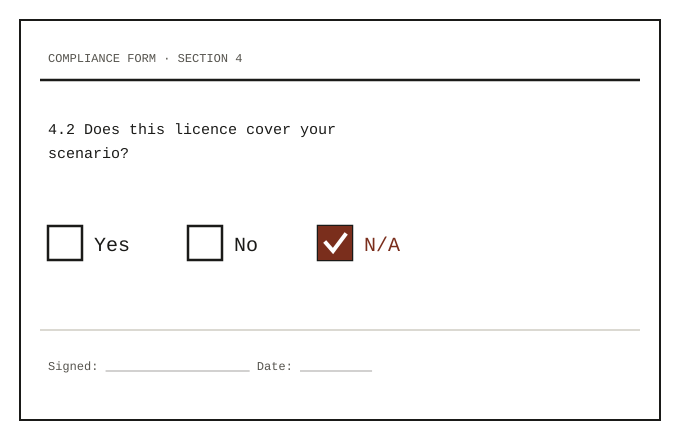
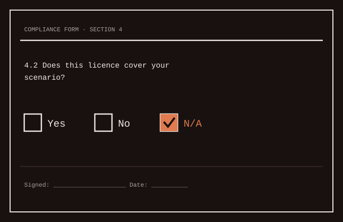
Sheet
Existing.
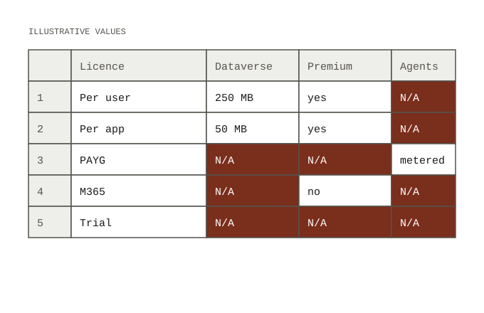
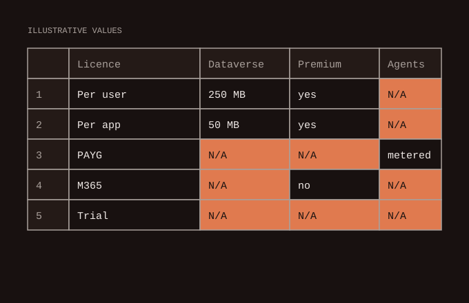
Hatch chart
Existing.
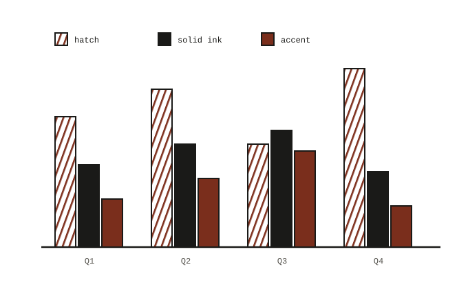
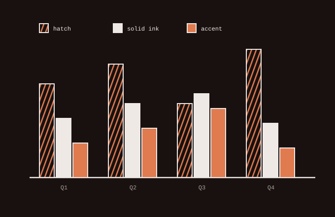
Cut
Existing.
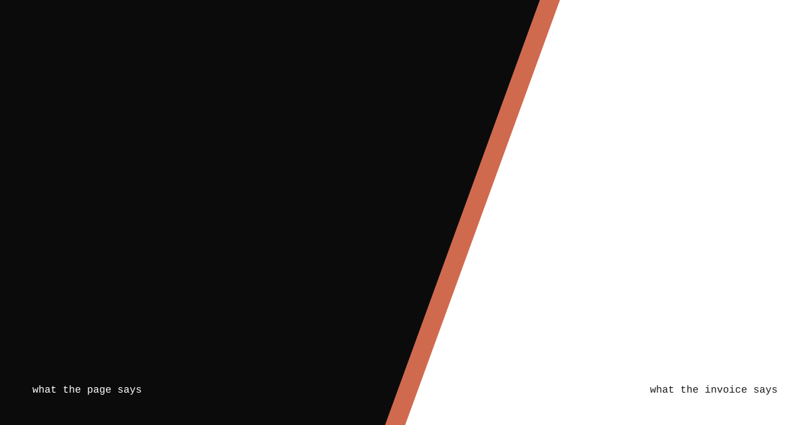
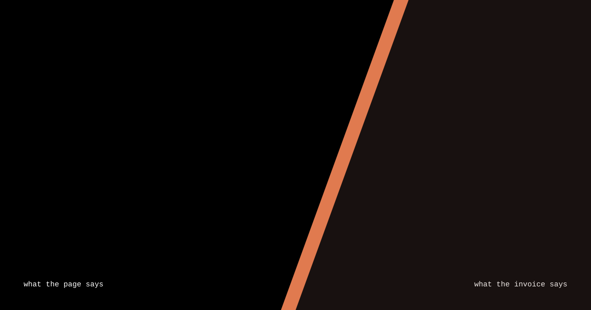
Crop
Existing.
Hatch band
Existing.
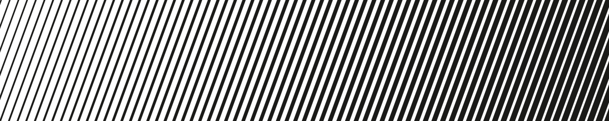
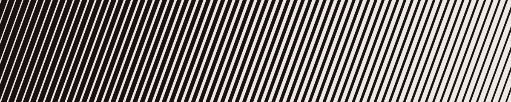
Open
Glyph set (SPICE.md, Provisional): proposal to settle it through these pieces, with § for terms, ≠ for changed wording, ∅ for removed features and ? for open questions. Not decided.